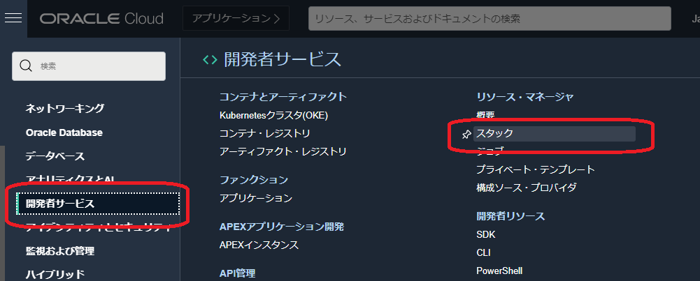
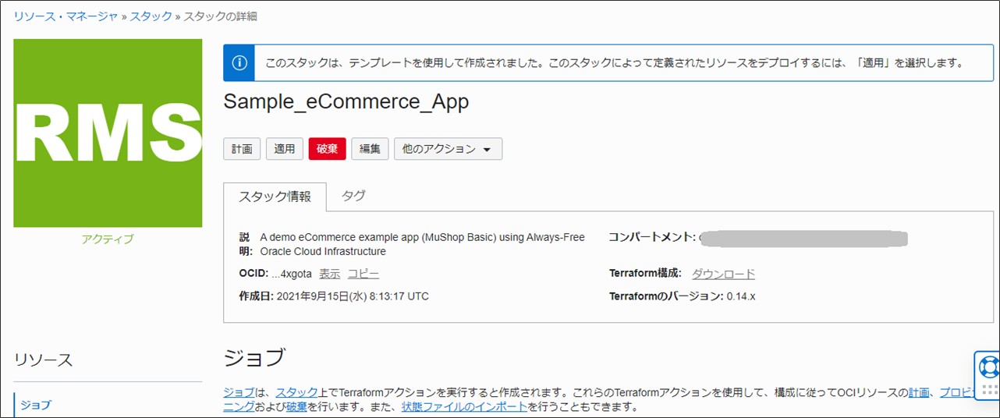
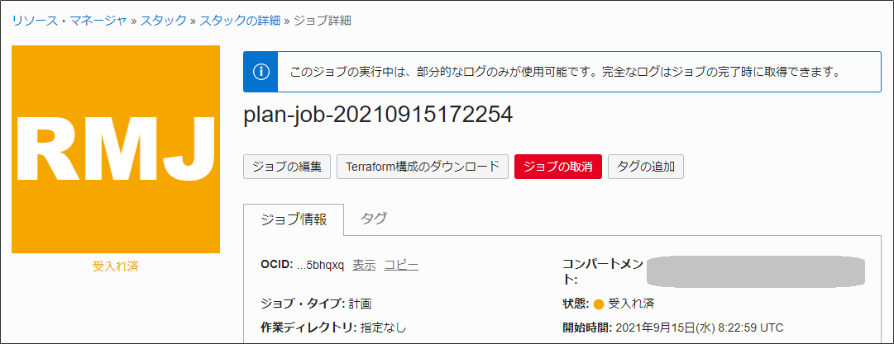
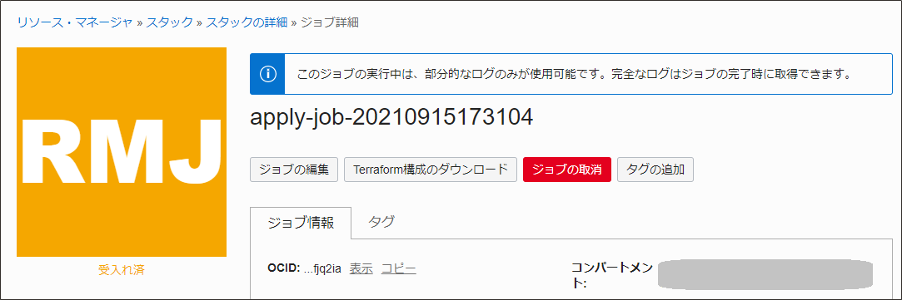

チュートリアル一覧に戻る : 応用編 - Oracle Cloud Infrastructure を使ってみよう
Oracle Cloud Infrastructureリソース・マネージャは、OCI上のリソースのプロビジョニング処理を自動化するInfrastructure-as-code （IaC）を実現するサービスです。環境構築を自動化することで迅速にテスト環境や開発環境を作成、削除、変更ができ、こうした環境構築にかかるコストや時間を削減することができます。
仕組みとしてはTerraformを利用していますが、ユーザ自身がTerraform実行環境を用意する必要はなく、リソース・マネージャを使えばManagedなOCI上のサービスとしてTerraformを実行できます。
また、Terraformに慣れていない方はイチからコードを作成するのは大変と感じられるかもしれませんが、リソース・マネージャにはサンプルのスタックも用意されているので、それらを使って簡単にプロビジョニングを行い、学習することも可能です。
このチュートリアルでは、リソース・マネージャにあらかじめ用意されているスタックを使って、サンプルのeコマース・アプリケーションの構成をデプロイしていきます。サンプルのeコマース・アプリケーションを利用する場合は、ホーム・リージョンで操作する必要があります。
以下のような構成がプロビジョニングされます。

また、このサンプル・アプリケーションの説明は、以下のURLを参照してください。
https://github.com/oracle-quickstart/oci-cloudnative/tree/master/deploy/basic
- 所要時間 : 15分
- 前提条件 : 適切なコンパートメント(ルート・コンパートメントでもOKです)と、そこに対する適切なリソース・マネージャの管理権限がユーザーに付与されていること
- 注意 : チュートリアル内の画面ショットについてはOracle Cloud Infrastructureの現在のコンソール画面と異なっている場合があります
1. スタックの作成
使用するTerraform構成をOCI上のリソースとして登録したものがスタックです。リソース・マネージャでリソースをプロビジョニングしたりする場合は、まずはスタックを作成する必要があります。
コンソール画面からスタックを作成していきます。
-
コンソールメニューから 開発者サービス → リソース・マネージャ → スタック を選択し、 スタックの作成 ボタンを押します


- 立ち上がった スタックの作成 の 1 スタック情報 画面に以下の項目を入力し、左下の 次 ボタンを押します。指定がないものは任意の値でOKです。
- Terraformの構成のオリジンを選択します。 - テンプレート を選択
- スタック構成 - サンプルのeコマース・アプリケーション を選択。
- テンプレートの変更 をクリックし、アーキテクチャ タブの サンプルのeコマース・アプリケーション にチェックを入れ、左下の テンプレートの選択
- 名前 - 任意の名前を入力。ここでは Sample_eCommerce_App としています。
- 説明 - デフォルトのまま変更せず。
- コンパートメントに作成 - 使用するコンパートメントが選択されていることを確認。
-
Terraformのバージョン - デフォルトのまま変更せず

-
次の 2 変数の構成画面 に以下の項目を入力し、左下の 次 ボタンを押します。
- General Configuration
- Node Count - デフォルトのまま
- Optional Configuration
- Database Name - デフォルトのまま
-
Use Only always free eligible resources - Always Freeのリソースのみで構成したい場合はチェックを入れます。

- General Configuration
-
最後の 4 確認 の画面で内容を確認したら、適用の実行 にはチェックを入れずに、そのまま左下の作成ボタンをクリックします。（チェックを入れることでスタック作成と同時に実際のリソースのプロビジョニングすることもできますが、ここではまずはスタックのみを作成してみます。）

-
スタックが作成されました。

2. スタックの計画
スタックで実行できるアクションの中に、「計画（Plan）」、「適用（Apply）」、「破棄（Destroy）」があります。
- 計画：Terraform構成を解析して、関連するスタックの実行計画を作成します。
- 適用：実際にその計画を適用して実行します。
- 破棄：スタックに関連付けられたリソースを削除します。
まずは「計画」を行って、どのようなリソースが作成できるか確認してみましょう。
-
作成したスタックの詳細画面で 計画 ボタンを押します。

-
確認画面でそのまま左下の 計画 ボタンを押します。

-
ジョブの詳細 画面が開きます。しばらくすると、ステータスが「受入れ済」→「進行中」と遷移します。

-
ステータスが 成功 になれば計画が問題なく完了した状態です。

-
必要に応じて、画面の下の方からログをダウンロードもできますので、どのような実行計画かを確認する場合はダウンロードしてみてみましょう。

3. スタックの適用
続いて、スタックを適用していきます。
-
スタックの詳細画面で 適用 ボタンを押します。

-
出てきた確認ウィンドウでそのまま左下の 適用 ボタンを押します。

-
ジョブの詳細画面で、ステータスが「受入れ済」→「進行中」と遷移します。実際に各種リソースを作成しているため、時間がかかります。進捗状況はログを見ることで確認できます。

-
ステータスが 成功 になったことを確認します。適用が完了したので、リソースがプロビジョニングされているはずです。

-
ログのダウンロード ボタンを押し、ログのダウンロードをしておきましょう。

-
ログの一番下の行に、作成されたパブリック・ロードバランサーのIPアドレスと、このアプリケーションのソースコードのgithubのURLの記載があります。 lb_public_url = “＜IPアドレス＞” のIPアドレスをコピーします。

-
適用完了当初はまだアプリケーションが起動できていない可能性があるので、しばらく待ってからブラウザでlb_public_urlで示された http://＜IPアドレス＞ を入力します。このような猫ショップのサイトが開ければ成功です。

-
OCIコンソールの各サービスのページを開き、このスタック適用で以下のリソースが作成されたことを確認します。
- コンピュート・インスタンス
- VCN
- ロード・バランサ
- Autonomous Database
4. Terraform構成のダウンロード
テンプレートで作成したスタックから、Terraform構成をダウンロードできます。
- 作成したスタックの詳細画面で ダウンロード リンクを押します。

- .tf の拡張子が付いたファイルがそれぞれのリソースを作成するための構成ファイルになっています。ネットやロードバランサー、ATP、コンピュート、ストレージなどのリソースがそれぞれ定義されていることが分かります。必要に応じて参照してみてください。

5. スタックの破棄
最後に作成したリソースを全て削除します。
-
スタックの詳細画面から 破棄 のボタンをクリックします。

-
確認画面左下の 破棄 ボタンをクリックします。

-
ジョブのステータスが 受入れ済→進行中 に遷移します。

-
ステータスが 成功になれば破棄完了です。

-
各リソースのページを開き、（コンピュート・インスタンスの画面やAutonomous Databaseの画面）から、作成されたリソースが削除されていることを確認しましょう。スタック自体は残っていますので、また適用を行うことで、同じ構成を再度プロビジョニングすることも簡単にできます。
以上で、この章の作業は終了です。
チュートリアル一覧に戻る : 応用編 - Oracle Cloud Infrastructure を使ってみよう